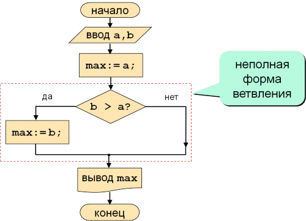
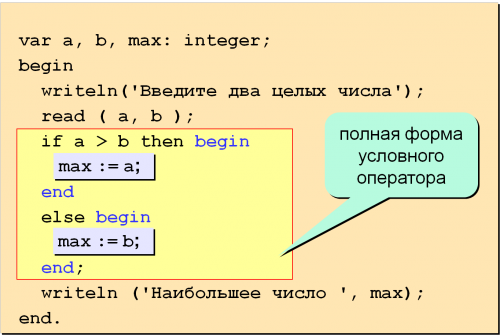
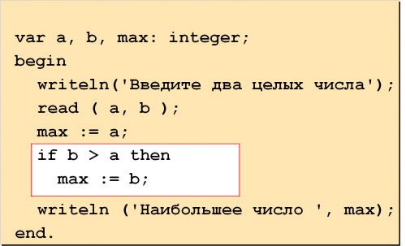
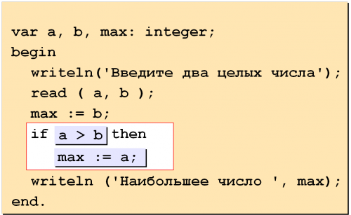

|
До рассмотрения данной темы в основном использовались линейные
алгоритмы, характерные для весьма простых задач, когда
действия (операторы) выполняются последовательно, одно за
другим. Более сложные алгоритмы предусматривают использование
конструкция ветвления.
Блок-схема условного оператора:
Условный оператор имеет следующий синтаксис:
Сокращенный вариант:
if условие then
оператор;
|
Полный вариант:
if условие then
оператор
else
оператор;
|
Условный оператор — if —
служит для организации хода задачи таким образом, при котором
изменяется последовательность выполнения операторов в
зависимости от какого-либо логического условия. Логическое
условие может принимать одно из двух значений: либо true (истина),
либо false (ложь),
соответственно, оно может быть либо истинным, либо ложным.

СОСТАВНОЙ
ОПЕРАТОР
Если при истинном условии необходимо выполнять несколько
операторов, то их
по правилам языка необходимо заключать в блок,
начинающийся со служебного слова begin и
заканчивающегося служебным словом end.
Такой блок принято называть операторными
скобками, а данную конструкцию — составным
оператором:
Операторные скобки и составной оператор в Паскале:
if логическое выражение then
begin
оператор1;
оператор2;
end
else
begin
оператор1;
оператор2;
end;
|
Перевод с английского оператора условия облегчит понимание его
использования:
|
IF |
THEN |
ELSE |
|
ЕСЛИ |
ТО |
ИНАЧЕ |

В условии (в логическом выражении) используются операторы
отношения.
Рассмотрим список операторов отношения :
-
больше
>
-
меньше
<
-
больше или равно в Pascal
>=
-
меньше либо равно в Pascal
<=
-
сравнение в Pascal
=
-
не равно в Pascal
<>
Пример: найти наибольшее из двух чисел
|
Вариант 1 |
Вариант 2 |
|
 |
 |
|